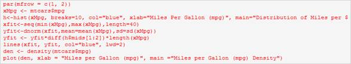
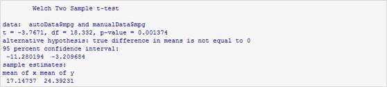
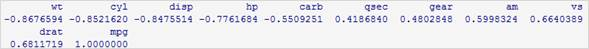
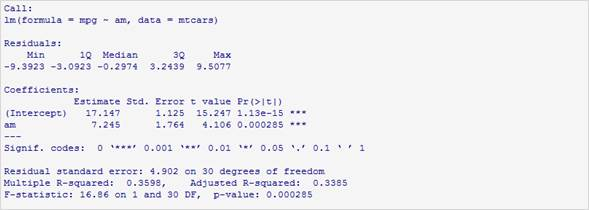
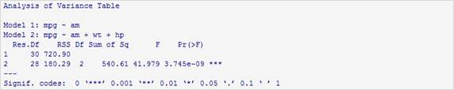
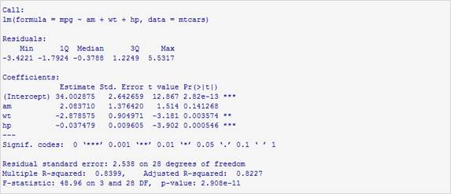
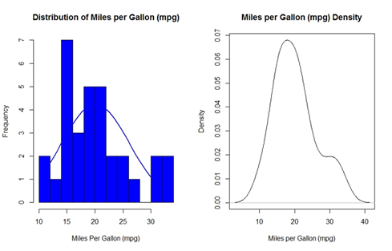
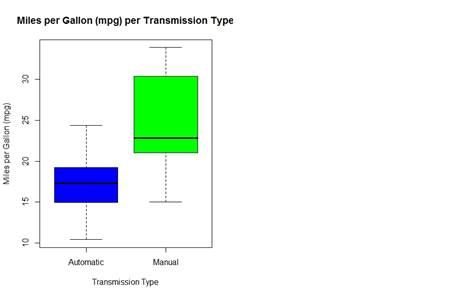
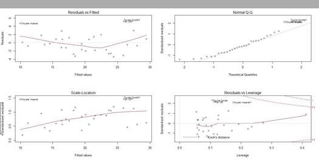

Regression Models: Course Project
Effect of Transmission Type on Car Fuel Consumption
Executive Summary
Using the mtcars data set, the purpose of this analysis, is to study the effect of the transmission type on fuel consumption. The study is aiming to answer following two questions:
• Is an automatic or manual transmission better for MPG?
• Quantify the MPG difference between automatic and manual transmissions
To answers these questions, we use exploratory data analysis and regression models.
Data Processing
In this step, we load and read the data and prepare it for analysis. Looking at the data headers, the field “am” is going to be the predictor variable that guides the study. This variable can be converted to a factor class with better descriptive labels: “Automatic” and “Manual”.
Exploratory Data Analysis
To ensure that our regression model will be accurate, we will analyze and plot the “mpg” dependent variable to check its distribution.

See Fig. 1 in Appendix
The plots show that the distribution is acceptably clean or normal and there are no skewing outliers.
Now we analyze and compare the transmissions: Automatic vs Manual
See Fig. 2 in Appendix
Manual transmissions show better utilization of fuel than automatic transmissions.
Hypothesis
In this section, we will throw a hypothesis but first we have to get the mean of each:
The difference is 7.245 MPGs in favor of manual transmissions.
Does this difference stand to be statistically significant?
To test this, the alpha-value is set to 0.5, and a t-test is run to test the hypothesis:

The null hypothesis is rejected due to the p-value of 0.001374.
The Model
First, we create a correlation matrix for the mtcars dataset and look at the row for mpg to decide on the predictors to be used in the model.

It is determined that wt, cyl, disp, and hp are highly correlated with mpg, therefore they can be candidates for the model. It is also determined that cyl and disp are are highly correlated with each other so they were excluded from the model.
Regression Analysis
We first fit a simple linear regression for mpg on am.

Then, we do a multivariate linear regression fit for mpg on am, wt, and hp.

The null hypothesis is rejected due to the p-value of 3.745e-09.
Now we show the plots and summary
See figure 3 in Appendix

Conclusion
We conclude that cars fitted with manual transmissions have better fuel efficiency than cars with automatic transmissions.
Appendix

Figure 1
---------------------------------------------------------------------------------------------------

Figure 2
---------------------------------------------------------------------------------------------------

Figure 3